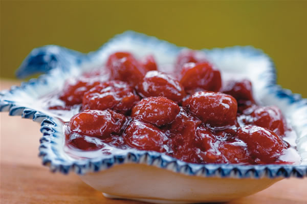
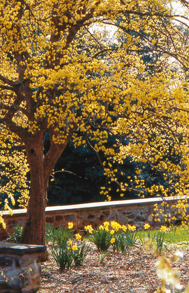
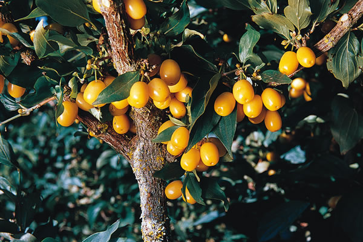
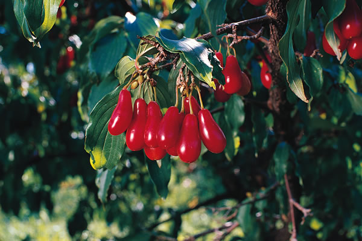

Cornelian cherries, sometimes called simply cornels, are not really cherries. They grow on a tree (Cornus mas) that is a first cousin of the American dogwood. But this fruit has had a loyal culinary following since ancient times based on the luxuriously floral sweetness of the syrups, puddings, drinks and confections that are made from it. Modern varieties allow cooks to bring bigger, even more flavorful cornelian cherries into the kitchen.
The plant is a superhardy native of the Black Sea region, and even thrives in Siberia. Much smaller than the American dogwood its more of a rangy bush than a tree - the cornelian cherry tree produces a cheerful mist of tiny yellow flowers in February and early March in my Zone 6 garden, culminating in a huge crop of smooth, oblong berries in late summer or early autumn.
Wild members of the species yield tiny fruits with a large pit similar to that of an olive, which is why it was considered primarily food for pigs in ancient Greek literature. The Armenians, Greeks, Romans and Persians must have liked them in spite of this because the cherries are mentioned often as edible fruits in their texts. The ancients also knew that, while much too sour to eat out of hand, the fruit had medicinal qualities. What they did not know is that it is high in vitamin C??probably the reason for its healing effects on patients. In the first century, the Greek physician Dioscorides mentioned that the unripe fruit could be pickled like olives, an experiment I have tried with great success. The fruits even look like olives, in spite of their softer texture and different colors.
The appreciation of cornelian cherries was taken over from the Byzantine Empire by Turks, who today make many of the commercially available products that feature the fruit.
In Russia, the cherries are made into wine and added to vodka, and Russian cornelian cherry preserve (see image gallery) is served in small dishes and eaten as a luxury sweet with steaming hot black tea.
American cooks owe a lot to the late Jane Grigson, a British food writer who enthusiastically wrote about cornelian cherries and published a number of useful recipes. Her English readers were quite familiar with the plant as a common ornamental shrub in their country valued more for its early spring flowers and colorful fall foliage than for its edible fruit. But Grigson was fond of eating the fruit. By the time we get home, she wrote in The Fruit Book (Penguin Books), the berries are ripening to red, and the race with the birds is on. If I win, I make them into a jelly to go with Christmas turkey, a jelly of the most beautiful pink color. Rarely are there enough to give me more than two small pots.
American landscapers of the 1920s also took an interest in the plant as an ornamental, thus it is possible to find thickets in many older parks and landscape settings across the eastern half of the country.
Valley Forge National Historical Park in Pennsylvania, for example, boasts several old stands of the plant, and when the cherries are ripe, it is not unusual to see Iranian families picnicking under them and surreptitiously shaking the tree limbs to make the cherries fall on their blankets. Sour, prunelike dried cornelian cherries are a prized ingredient in Persian cuisine, as they are throughout much of central Asia.
Indeed, another name for the cornelian cherry tree is sorbet tree, because it was the juice of the cherries that was used to flavor the original Persian sorbets.
Within the last 30 years, Russian, Ukrainian and Bulgarian plant breeders have taken the lead in developing new varieties of cornelian cherries, and the range of their creations is quite astounding. When ripe, some cornelian cherries are the size of large, plump olives; others are pear-shaped and yellow (instead of the more common cherry red; see picture in image gallery) or nearly black when ripe. All of them offer an array of truly exotic flavors that simply cannot be found in other types of fruit. (See Tasty Russian and Ukrainian Varieties, below.)
How would I describe the taste of cornelian cherry preserve in the recipe on Page 104? Complex: a mix of carnations; the Croatian cherry liqueur Maraschino di Zadar; black cherries; and a touch of the fragrance of a night-blooming cereus. Sugar transforms this sour fruit into a sweet yet subtle culinary perfume.
Decide early whether you want cornelian cherries as ornamental plants or for their fruit.
As an ornamental, they will grow well in semi-shade, even under the canopy of much larger trees. They also can take very bald, even dry soils, and temperatures as low as minus 30 degrees; the U.S. Department of Agriculture recommends planting the cornelian cherry as far north as Zone 4. Most plants reach a mature height of about 10 feet but can grow to 14 feet and beyond depending on the soil and location.
For the best fruit, richer soil, good exposure to the sun and planting several trees together are recommended. Although self-fertile, plants that can cross-pollinate easily will produce 30 to 40 pounds of fruit. I also recommend pruning them like apple trees in order to keep the fruit down where you can reach it. Otherwise, you may need a ladder to reach the upper branches, but keep in mind that the limbs are brittle and break easily from such stress.
The best plants for fruit are the ones developed specifically for this purpose and grown from cuttings. Orchard stock usually bears fruit the second or third year after planting, although I have waited as long as eight years for some of my trees to bear a crop. Plants raised from seed will revert to wild types with small, stony cherries. The same is true of the ornamental varieties developed primarily for their spring flowers. It is therefore important to get the best stock possible for the purpose you intend.
Organic growers will take pleasure in noting that the cornelian cherry is largely pest-free and not subject to the same diseases as the American dogwood. I have never sprayed my trees for any reason in all the years I have grown them. Catbirds and magpies are fond of pecking the ripe fruit, but theyre about the only competition you will have at harvest time.?
Heirloom Vegetable Gardening: A Master Gardener’s Guide to Planting, Seed Saving and Cultural History by William Woys Weaver, now on CD. If you want to explore the fabulous flavors, fascinating history and amazing diversity of vegetables, this is the book to start with. Food historian and Mother Earth contributing editor Will Weaver profiles 280 heirloom varieties, with authoritative growing advice and incredible recipes. First published in 1997, Heirloom Vegetable Gardening has since been out of print, with used copies selling online for as much as $300. We are proud to present the original text, with color photos, as a digital book on CD-ROM. Order now.
|
 This old cornelian cherry tree blooms with the daffodils for a welcome sight each spring in Pennsylvania. Fruits are ready to harvest in late summer or early fall. |
 |
 |
|
 |
|
|